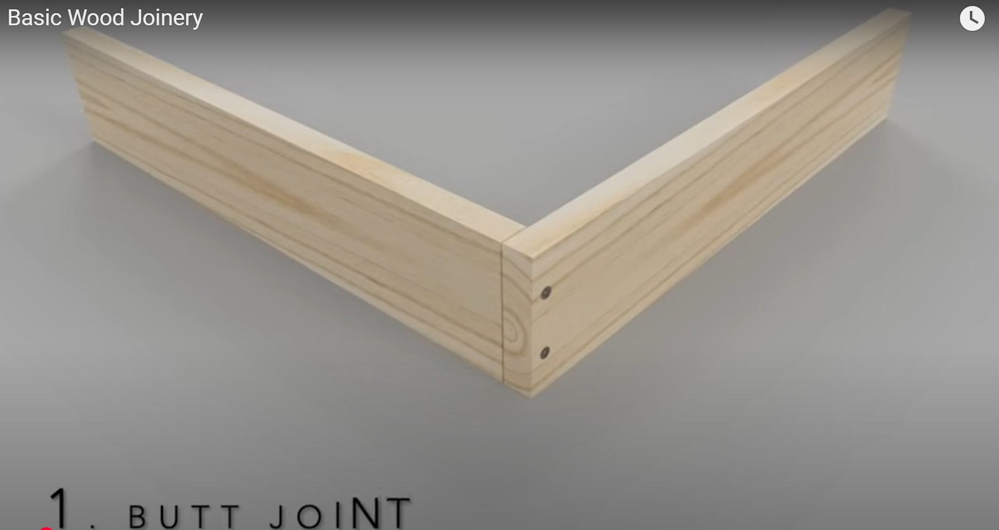

Learning pathway
Produce and assemble safely
Read, check your understanding, apply the ideas to your project and save evidence.
- 1Cut and shape
- 2Choose joints
- 3Dry fit and glue
Student evidence
Your details
Autosave is on
Accurate cutting and shaping depend on control, patience and regular checking.
Cutting and shaping components accurately

Cutting and shaping remove material to create the parts shown in the approved drawings. Begin only after the mark-out has been checked and production has been authorised by the teacher. The aim is not to remove material as quickly as possible. The aim is to work accurately, safely and in a way that leaves enough material for controlled refinement.
Teacher-approved hand tools may include a tenon saw, bevel-edged chisel and block plane, depending on the task and the student’s authorisation. Each tool removes material differently, so it must be used only after instruction and demonstration. Work should be secured in a bench hook or vice as demonstrated so the component remains stable and both hands can be kept under control.
Start from the approved mark-out and identify the waste side before cutting. Work on the waste side of the line rather than removing the line itself. Leaving a small amount of material allows the surface or edge to be refined gradually. Removing too much material is harder to correct and may affect joint fit, component size or the overall squareness of the Desk Tidy.
Check progress often using the approved drawings and suitable checking tools. Confirm that edges are square where required and compare matching components so they remain consistent. Small differences can build into larger problems during dry fitting and assembly. Regular checking reduces waste and makes later adjustments more manageable.
If a cut wanders, a surface becomes uneven or the tool begins to bind, stop and diagnose the cause. Do not force the tool or continue hoping the error will disappear. Seek teacher guidance before attempting a correction. Any drilling required for the approved design is completed only as an authorised, teacher-controlled process following instruction and workshop requirements.
- Secure: Hold the work in the demonstrated bench hook or vice setup.
- Confirm: Check the approved mark-out and identify the waste side.
- Cut: Remove material with controlled strokes on the waste side.
- Refine: Leave material for careful shaping rather than overcutting.
- Check: Test squareness, fit and matching components regularly.
- Stop: Diagnose errors and seek guidance before continuing.
A joint should suit the parts being connected, the required accuracy and the approved design.
Butt, rebate and dowel joints in a Desk Tidy

A joint connects two or more components so they work as one structure. In a Desk Tidy, the most suitable joint depends on the relationship between the parts, the required alignment, the appearance of the finished product and the level of accuracy that can be achieved. The approved student drawing and teacher direction determine which joint is used in each situation.
A butt joint places the end or edge of one component directly against another. It is simple to understand and can be suitable where parts meet clearly and accurately. Its main limitation is that alignment depends heavily on careful marking, square edges and secure positioning. The contact area for glue may also be smaller than in some other joint types.
A rebate joint includes a step or recess that helps locate one component against another. This can improve alignment and provide a clearer seating position during assembly. It may also increase the available glue area. However, the rebate must be marked and formed accurately. If it is uneven, too loose or out of square, the connected parts may sit incorrectly.
A dowel joint uses hidden cylindrical connectors to align and join components. It can create a neat appearance because the connectors are usually not visible in the finished joint. Its success depends on matching hole positions and accurate alignment between parts. Small marking errors can cause the components to sit unevenly or prevent the joint from closing properly.
Before glue is applied, every approved joint should be dry fitted. Check that surfaces meet evenly, components remain square and matching parts align as intended. Gaps may suggest inaccurate edges or poor seating. Twist may indicate that parts are not square or are being held unevenly. Misalignment may come from incorrect marking, joint position or component orientation. Stop and diagnose the cause with the teacher rather than forcing the joint together.
| Joint | Main advantage | Main limitation | Key check |
|---|---|---|---|
| Butt | Simple component relationship | Relies on accurate edges and alignment | Square contact with no rocking |
| Rebate | Helps locate parts and may increase glue area | Recess must be accurate | Even seating along the joint |
| Dowel | Neat, concealed connection | Matching positions are critical | Parts close without offset |
A careful dry fit prevents rushed assembly and makes surface preparation more effective.
Dry fitting, PVA assembly and surface preparation

A complete dry fit means assembling all prepared components without glue so the Desk Tidy can be checked as a whole. Confirm that the parts are in the correct order, joints close properly, the structure sits square and the organiser remains stable on a flat surface. Check the approved drawing as you work and identify any gaps, twist, rocking or misalignment before assembly continues.
The dry fit is also a planning check. Students should know which component is positioned first, how the remaining parts relate to it and where clamps can be placed safely. If anything is unclear or does not fit correctly, stop and seek teacher guidance. The teacher must approve the dry fit and assembly plan before PVA adhesive is applied.
PVA is applied only to prepared joint surfaces using the method demonstrated by the teacher and following product instructions. Parts should be brought together carefully so their alignment is maintained. Clamps must be positioned as demonstrated to hold the joints securely without pulling the structure out of square. Use only enough pressure to close the joints appropriately; excessive pressure can shift components, damage edges or force out too much adhesive.
Any squeeze-out should be managed using the approved workshop method before it creates extra surface-preparation work. Recheck squareness, alignment and stability after clamping because parts can move during assembly. Record clear photographs that show the assembled structure, clamp arrangement and important quality checks. These images can provide useful evidence for the project folio.
Once the teacher and product instructions allow surface preparation to continue, sanding should progress through the authorised sequence of 80, 120 and 240 grit, unless the teacher directs otherwise. Each stage removes marks left by the previous grit. Protect corners and edges from becoming rounded unintentionally, sand surfaces evenly and remove dust using the approved method before checking the result or moving to the next stage.
- Dry fit: Assemble all parts and check order, fit, square and stability.
- Approve: Resolve faults and gain teacher approval.
- Assemble: Apply PVA and clamp using demonstrated methods.
- Check: Manage squeeze-out and recheck alignment.
- Record: Photograph the assembly and quality checks.
- Prepare: Sand progressively and remove dust as directed.
Guided practice
Weeks 7-8 knowledge checks
Use hints and feedback until you can explain each decision.
Apply your learning
Scaffolded written responses
Write first, use the guidance, then compare with the model.
Finish the two-week block
Save your evidence
Your work saves in this browser, but browser storage is not the official submission. Save this page as a PDF.
No marks, answers or personal information are sent from this webpage.